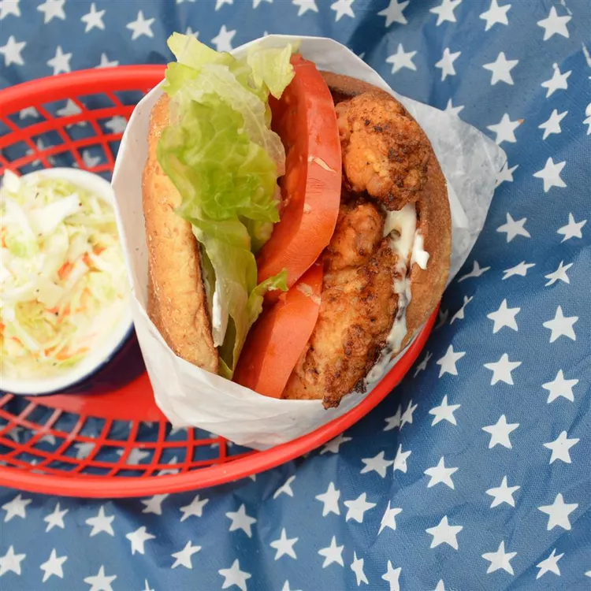

Milanesa Sandwich

This Chicken Milanesa is a satisfying, crispy go-to lunch and dinner
recipe. The crumbing (because bread) in Milanesa is always a tasty
addition to chicken. Its comforting and still nourishing! This main has
sides like rice, salad, beans, pasta, or is the core to a tasty sandwich.
Make this with confidence by using simple steps to make this fried
favorite at home. You will keep coming back to the kitchen for more.
Ingredients
- 1 cup all-purpose flour
- ½ teaspoon ground paprika
- ½ teaspoon garlic powder
- 4 skinless, boneless chicken breasts
- 5 tablespoons vegetable oil, or as needed
- 4 leaves romaine lettuce (Optional)
- 1 large tomato, sliced
- 4 whole wheat buns, toasted
Steps
- Whisk flour, paprika, and garlic powder together in a shallow bowl. Dredge and thoroughly coat chicken in flour mixture.
- Heat oil in a heavy skillet over medium heat. Add and cook chicken, in batches, until golden brown and no longer pink in the center,
about 5 minutes per side. Drain on paper towels.
- Layer chicken, lettuce, and tomato on buns.
Home